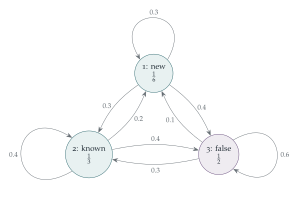

It has been observed that Professor Ecks proves three types of theorems: 1, those that are correct and new; 2, those that are correct, but already known; 3, those that are false. It has also been observed that, if a certain of her theorems is of type \(i\), then her next theorem is of type \(j\) with probability \(p_{ij}\), where \(p_{ij}\) is the entry in the \(i\)th row and \(j\)th column of the following array: \[\begin{pmatrix} 0.3 & 0.3 & 0.4 \\ 0.2 & 0.4 & 0.4 \\ 0.1 & 0.3 & 0.6 \end{pmatrix}.\] Let \(a_i\), \(i = 1, 2, 3\), be the probability that a given theorem is of type \(i\), and let \(b_j\) be the consequent probability that the next theorem is of type \(j\).
Explain why \(b_j = a_1p_{1j} + a_2p_{2j} + a_3p_{3j}\).
Find values of \(a_1\), \(a_2\) and \(a_3\) such that \(b_i = a_i\) for \(i = 1, 2, 3\).
For these values of the \(a_i\) find the probabilities \(q_{ij}\) that, if a particular theorem is of type \(j\), then the preceding theorem was of type \(i\).
The hook
Professor Ecks’s theorems follow a pattern: what she proves next depends only on what she proved last. A process whose future depends on the present but not on the past is a Markov chain, and Markov chains are everywhere: in weather models, in the board game Snakes and Ladders, in models of DNA, in Google’s original PageRank algorithm, and in the methods statisticians use to simulate complicated probability distributions.
This question finds the long-run mix of theorem types, the stationary distribution: in the long run, one in six of her theorems is new and correct, and half are false. Then it runs the chain backwards in time, and asks: given today’s theorem, what was yesterday’s?
Before you start
What does the condition “each row adds up to \(1\)” mean? Do the columns add up to \(1\)?
Row \(i\) lists the probabilities of the next type, given that the current type is \(i\); one of the three must occur, so each row adds to \(1\). The columns need not: the second column adds to exactly \(1\), but the first adds to \(0.6\) and the third to \(1.4\).
Working it through
Stage 1 One step
By the law of total probability, conditioning on the type \(i\) of the current theorem, \[b_j = \sum_i\mathrm{P}(\text{current } i)\,\mathrm{P}(\text{next } j \mid \text{current } i) = a_1p_{1j} + a_2p_{2j} + a_3p_{3j}. \qed\] In matrix terms, the row vector \(\mathbf b = \mathbf aP\).
Stage 2 The stationary distribution
We want \(\mathbf a = \mathbf aP\) with \(a_1 + a_2 + a_3 = 1\). Write out the equations. Which are the simplest?
The equations are \[\begin{aligned} a_1 &= 0.3a_1 + 0.2a_2 + 0.1a_3, \\ a_2 &= 0.3a_1 + 0.4a_2 + 0.3a_3, \\ a_3 &= 0.4a_1 + 0.4a_2 + 0.6a_3. \end{aligned}\] (They are not independent: adding them gives \(a_1 + a_2 + a_3\) on both sides.) The second gives \(0.6a_2 = 0.3(a_1 + a_3) = 0.3(1 - a_2)\), so \(a_2 = \frac13\). The first gives \(7a_1 = 2a_2 + a_3 = \frac23 + a_3\), and \(a_1 + a_3 = \frac23\), so \(8a_1 = \frac43\), \(a_1 = \frac16\), \(a_3 = \frac12\): \[(a_1, a_2, a_3) = \bigl(\tfrac16, \tfrac13, \tfrac12\bigr). \qed\]
Stage 3 Running the chain backwards
\(q_{ij} = \mathrm{P}(\text{previous } i \mid \text{current } j)\). Use Bayes’ theorem, with the stationary distribution for both the previous and the current theorem.
By Bayes’ theorem, \[q_{ij} = \frac{\mathrm{P}(\text{previous } i)\,\mathrm{P}(\text{current } j \mid \text{previous } i)}{\mathrm{P}(\text{current } j)} = \frac{a_ip_{ij}}{a_j}.\] For example \(q_{11} = \frac{\frac16 \times 0.3}{\frac16} = 0.3\) and \(q_{21} = \frac{\frac13 \times 0.2}{\frac16} = 0.4\). Altogether (with \(i\) labelling rows and \(j\) columns): \[(q_{ij}) = \begin{pmatrix} 0.3 & 0.15 & \frac{2}{15} \\ 0.4 & 0.4 & \frac{4}{15} \\ 0.3 & 0.45 & 0.6 \end{pmatrix}. \qed\] Each column now adds to \(1\), since column \(j\) lists the possible types of the previous theorem.

Looking back
The law of total probability, as a matrix. One step of the chain is multiplication of a row vector by the matrix \(P\).
Stationarity is an eigenvector. \(\mathbf a = \mathbf aP\) says that \(\mathbf a\) is a left eigenvector of \(P\) with eigenvalue \(1\).
Reverse with Bayes. The backwards probabilities are another stochastic matrix, built from the forwards one and the stationary distribution.
What’s really going on
Convergence to equilibrium
Start Professor Ecks with any theorem; after \(n\) more, the distribution of the type is \(\mathbf a_0P^n\). For a chain like this one, in which every type can follow every other, \(P^n\) converges to a matrix with every row equal to the stationary distribution \((\frac16, \frac13, \frac12)\), whatever the starting point. The speed of convergence is governed by the other eigenvalues of \(P\) (here \(0.2\) and \(0.1\)), which shrink geometrically: after just a few theorems, her past is forgotten. This ergodic theorem for Markov chains is a central result of a second-year probability course, and it is what makes Markov chain Monte Carlo methods work: to sample from a complicated distribution, design a Markov chain with that stationary distribution, and run it for a long time.
Reversibility
The backwards chain \((q_{ij})\) is different from the forwards chain \((p_{ij})\): you can tell the direction of time from a long record of her theorems. Chains whose backwards and forwards versions agree, \(a_ip_{ij} = a_jp_{ji}\) for all \(i\), \(j\), are called reversible; they include random walks on networks and the models of physical systems in thermal equilibrium. Reversibility is a powerful property, because it makes the stationary distribution easy to find.
Andrey Markov introduced his chains in 1906, partly to show that the law of large numbers does not require independence, in a dispute with the mathematician Pavel Nekrasov, who had claimed it did. In 1913 Markov applied his idea to the first \(20\,000\) letters of Pushkin’s verse novel Eugene Onegin, classifying each as a vowel or consonant and showing that the type of each letter depends on the type of the previous one in a way well described by a two-state chain. It was the first statistical analysis of a text, and the ancestor of every predictive-text system.
The thinking skill
When a system moves between states with fixed probabilities, write the distribution as a vector and the transitions as a matrix. Then long-run behaviour becomes a question about eigenvectors.
At university, this brings the linear algebra of Chapter 7 into probability. The Perron–Frobenius theorem guarantees the stationary distribution, and the other eigenvalues measure how quickly it is reached.
Try this next
A rabbit warren. (From STEP III, 2003.) Chambers \(A\), \(B\), \(C\), \(D\) are at the corners of a square, joined by burrows along the sides, and each has a tunnel to the surface. A rabbit in a chamber runs to one of the two neighbouring chambers, or leaves by the tunnel, each with probability \(\frac13\). Let \(p_X\) be the probability of leaving by the tunnel at \(A\), starting from chamber \(X\). Show that \(p_A = \frac13 + \frac13p_B + \frac13p_D\), and find \(p_A\). Find the probability that a rabbit starting at \(A\) never visits \(C\), given that it leaves by the tunnel at \(A\).
Two steps. If Professor Ecks’s last theorem was new and correct, find the probabilities of the three types for the theorem after next.
Eigenvalues. Show that the eigenvalues of \(P\) are \(1\), \(0.2\) and \(0.1\).
Reversible? Check whether \(a_ip_{ij} = a_jp_{ji}\) for Professor Ecks’s chain. What does the answer tell you?
Further reading
James Norris, Markov Chains (Cambridge University Press). The standard undergraduate text.
Olle Häggström, Finite Markov Chains and Algorithmic Applications (Cambridge University Press). Short, and good on Markov chain Monte Carlo.
Brian Hayes, “First links in the Markov chain”, American Scientist 101 (2013). Markov’s Pushkin analysis, retold.